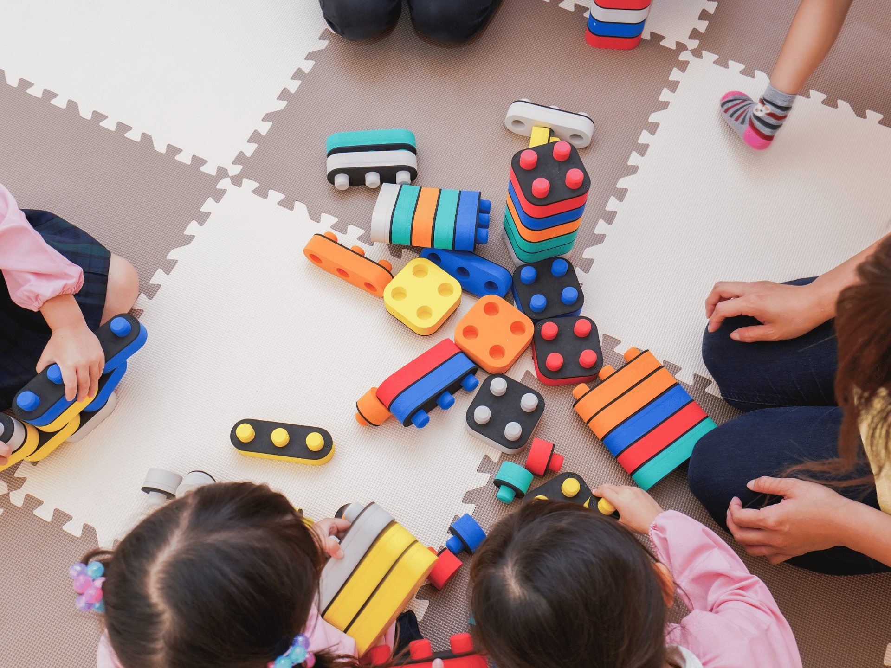

Service
お子さまの「育ちのつまづき」を、専門的な視点から整理し、成長を支援します。
どれか一つでも当てはまれば、まずはお気軽にご相談ください。
子どもの成長分野に専門性をもつ看護師がご自宅を訪問し、
遊びや感覚への働きかけを通して、お子さまの成長の土台を育てます。
お母さんよりお子さまの状態をお伺いし、また遊び等からお子さまと看護師との信頼関係を築きます
論文・研究ベースの「いまここシート」チェックからお子さまの状態を把握し、課題や改善案を分析します
分析に基づき訪問を開始、またご家庭での状況を共有し、成長に応じて定期的に課題を見直します
生活の場でのケア
病院ではなく、お子さまが安心できるご自宅へ訪問。慣れた環境だからこそ見える「本来の姿」を大切にします。
感覚・運動・言語への多角的アプローチ
運動・言語・コミュニケーション・生活など複数の分野から相互作用を捉え、一人ひとりに合った支援を提供します。
保護者への寄り添いと相談
子どもだけでなく、保護者の相談相手にもなります。関わり方のアドバイスを通じて、家族全体が落ち着ける時間を増やします。
学校・園・支援機関との連携
分析情報を視覚的に整理・共有することで、関わるすべての人が同じ方向を向いた包括的支援を実現します。

Juno独自の、論文・研究ベースの多角的アセスメントツール
特定のメソッドに依存せず、運動・言語・コミュニケーションなど複数の領域の相互作用を捉えることで、支援の方向性を明確にします。 分析結果は視覚化して共有できるため、保護者・学校・支援機関が共通認識を持った支援が実現します。 お子さまのストレスにならない方法でアセスメントを進め、無理のない範囲でお子さまの状態に合わせた支援を行います。
当ステーションをご利用いただくお子さまの対象年齢は、原則下記の通りとなります。
・男子：小学6年まで（訪問期間は中学3年まで）
・女子：中学3年生まで（訪問期間は高校3年生まで）
ASD（自閉スペクトラム症）／ADHD（注意欠如多動症）
DCD（発達性協調運動症）／知的発達症
不登校・生活の困りごと
グレーゾーン・発達が気になる段階でもOK
※診断の有無は問いません
※ LDのみの症例については対象外となります
※ 多動過多や強い衝動性がある場合、また暴言・暴力が強い場合も対象外となることがあります
名古屋市緑区・天白区・瑞穂区・東郷町
およびその近郊
エリア外の場合もまずはご相談ください。
医療保険が適用されるため、名古屋市では高校生まで原則費用負担なしです。
1回の訪問時間は30分。医師の訪問看護指示書が必要です（Junoが提携する医療機関をご紹介することも可能です）。
詳しくはお問い合わせください。
初回面談から訪問開始まで、丁寧にサポートいたします。
お問い合わせ・ご相談
Webフォームまたはお電話でご連絡ください。どんな些細なことでもお気軽にどうぞ。診断の有無・段階は問いません。訪問看護契約へ進む場合、医師の指示書を取得していただきます。
初回面談（事務所またはオンライン）
お子さまの状況やご希望を詳しくお聞きします。初回面談は事務所へのご来社またはオンラインにてご案内しております。ご都合に合わせてお選びください。
準備期間・関係構築からいまここシートの実施へ
準備期間としてお母さんよりお子さまのことをお聞きします。その後、関係構築期間を経て、いまここシートによるチェックを開始。お子さまの現在地を多角的に確認し、支援の方向性を整理します。
通常訪問開始・継続的な見直し
いまここシートや訪問記録、各種情報から分析した内容をもとに、通常訪問を開始。定期的な振り返りと見直しで、成長に合わせた支援を継続します。
実際にJunoをご利用いただいた保護者の方々からのご感想を、匿名・一部抜粋としてご紹介します。
これまで約20,000回以上の訪問を重ねてきました言葉が増えず、おうむ返しはできても会話が難しい状態でした。園でも友だちと遊ぶ様子がなく不安でした。訪問が始まり、少しずつ反応が変わってきました。言葉が増え、目を合わせてやり取りできるなど、安心して見守れる時間が増えました。
家では話せても、園や外では緊張で声が出なくなるなど悩んでいました。訪問では、無理に話させることはせず、安心できる環境で関わってくれたので、少しずつ家族以外の人にも反応したり、外でもいろんな人と短い会話ができるようになりました。
小学校から板書が難しく、宿題や忘れ物での注意が増えました。姿勢も安定せず、気持ちの切り替えが難しかったですが、訪問を通して体の使い方や遊びの関わりを続けてもらい、集中できる時間が増えました。最近は一人で机に向かう時間も増えました。
かんしゃくが多く、年齢の割にできることが少ないという悩みも、相談先がわからず、また母親が頑張りすぎて心配でした。訪問では子どもだけでなく親の相談相手にもなってもらえ、関わり方のアドバイスもあり家族でも落ち着いた時間が増えました。